1 Abstract
We specify a reproducible advanced literature-review workflow for rapidly changing domains in which a single query does not adequately represent methodological or temporal variation. The exemplar is configured for exoplanet atmospheric composition and separates foundation, James Webb Space Telescope, and molecular-detection phases.
The design is informed by systematic-review reporting practice (Page et al. 2021), but this repository release is a methods exemplar rather than a completed systematic review: its default corpus is synthetic and its phase boundaries, search coverage, and domain interpretation require review for any live application.
The pipeline combines multi-engine retrieval, canonical
de-duplication, deterministic screening, optional LLM-assisted
classification, full-text assessment, bibliometrics, knowledge-graph
construction, visualization, reproducibility assessment, and export.
Each stage has a declared input, output, method reference, and
definition of done in methods_pipeline.yaml. The numbered
scripts are thin adapters; reusable computation is tested in
src/.
The manuscript is generated from configuration and recorded artifacts. Offline runs use a clearly labelled synthetic fixture corpus with reserved identifiers and generated authors; they exercise pipeline behavior and are not evidence about exoplanet atmospheres. Live runs must retain retrieval reports, source provenance, claim classifications, and the exact configuration needed to interpret reported results.
The contribution is therefore infrastructural: it makes phase-aware search design, evidence boundaries, accessibility metadata, and reproducibility checks explicit while leaving domain claims subject to source-backed review.
Keywords: exoplanet atmospheres, literature review pipeline, systematic-review reporting, multi-phase search, LLM filtering, James Webb Space Telescope, atmospheric composition, transit spectroscopy, bibliometrics, cross-validation
2 Introduction
Rapidly changing fields require literature reviews that preserve the distinction between what was searched, what was retrieved, what was assessed, and what can be claimed. A single broad query hides phase-specific coverage and makes it difficult to explain how records entered a synthesis. This project treats a literature review as a reproducible data pipeline: configuration defines the review design, source adapters acquire records, analysis modules produce evidence artifacts, and rendering turns those artifacts into an auditable manuscript.
The reporting surface follows the spirit of systematic-review transparency (Page et al. 2021) without implying that the bundled fixture satisfies a domain protocol. A live review must define eligibility criteria, search dates, source coverage, screening procedures, and a domain-appropriate synthesis plan before its results are interpreted.
The bundled configuration targets Exoplanet Atmospheres. It defines three ordered phases for foundational methods, JWST-era observations, and molecular detection. The phase labels are configuration, not conclusions: a live review must justify its boundaries and update its claim ledger when the domain or search strategy changes.
2.1 Research Questions
- Coverage and retrieval. Which engines, queries, filters, and identifiers contributed records to each phase, and where are the known coverage limits?
- Structure. How do subfields, topics, authors, venues, and citation links vary across the configured phases?
- Evidence. Which claims are supported by source-backed records, which remain pending, and which are only properties of the synthetic fixture?
- Reproducibility. Can a clean run regenerate the data, figures, reports, and manuscript without unexplained differences?
2.2 Scope and contribution
The project contributes a reusable workflow rather than a domain conclusion. Retrieval and de-duplication preserve source observations; full-text assessment records access status; bibliometrics and graph construction expose descriptive structure; and the claim ledger separates fixture, configured, and source-backed statements. Subjective editorial, scientific, and visual judgments remain explicit review items even when all deterministic gates pass.
Every generated number in the rendered manuscript must come from an artifact listed in the manifest and be traceable to the relevant method stage. Missing, stale, or misclassified evidence is a release finding, not a value to be filled by hand.
3 Methods Overview
The project is an eleven-stage, file-system-backed pipeline.
methods_pipeline.yaml is the executable contract: each
stage names its method, dependencies, inputs, outputs, definition of
done, and stable failure code. Business logic lives in tested
src/ modules; numbered scripts only perform bootstrapping,
argument parsing, orchestration, and boundary I/O.
3.1 Pipeline stages
- Multi-phase retrieval
(
01_multi_phase_search.py) acquires records or runs the labelled offline fixture, applies configured filters, de-duplicates identifiers, and writes phase corpora plusphase_metadata.jsonand thephase_artifact_manifest.jsonphase-to-artifact provenance map. - Corpus analysis
(
02_meta_analysis_pipeline.py) computes subfields, temporal trends, TF-IDF/topics, and citation-network artifacts. - Knowledge graph construction
(
03_build_knowledge_graph.py) optionally extracts assertions and phase-aware hypothesis evidence; disabled or unmeasured LLM outputs remain explicitly pending. - Visualization (
04_generate_figures.py) renders figures from analysis artifacts and records each figure’s label, caption, filename, and generating stage in the figure registry. - Manuscript hydration
(
05_inject_variables.py) computes variables from outputs and writes rendered Markdown without changing source sections. - Full-text assessment
(
06_fulltext_assessment.py) records abstract, open-access, and PDF availability; downloading is opt-in and network-gated. - Literature evaluation
(
07_literature_evaluation.py) applies configured quality and fixture-honesty checks. - Research dispatch
(
08_deep_research_dispatch.py) replays a recorded report by default and exposes live provider dispatch only as an explicit opt-in. - Bibliography export
(
09_export_bibliography.py) writes a deterministic bibliography from the retained corpus and source references. - Reproducibility assessment
(
10_reproducibility_assessment.py) records workflow and source-consumption evidence. - Publication validation
(
11_validate_outputs.py) validates artifact, evidence, figure, and report contracts before the shared publication audit runs.
3.2 Reproducibility model
The offline path uses a deterministic synthetic fixture with reserved identifiers and generated authors. It is useful for CI and structural testing only; it is never a substitute for a representative live review. A live run must preserve the retrieval report, engine status, source identifiers, configuration, and claim classifications. Seeds and timestamp-free serializers are used where the pipeline supports exact replay.
3.3 Configuration surface
manuscript/config.yaml owns search terms, engines, phase
boundaries, filters, sampling seeds, full-text policy, embedding
settings, knowledge-graph settings, hypotheses, and subfield taxonomy.
domain_profile.yaml owns package and gate expectations;
experiment_plan.yaml records the review design;
data/claim_ledger.yaml records the provenance tier and
fixture/synthetic status of manuscript-facing claims.
4 Retrieval and De-duplication
Retrieval dispatches the configured query across 4 independent
literature engines (arXiv, OpenAlex, Semantic Scholar, and Crossref).
Each engine is an isolated adapter exposing a uniform
search(query) -> list[Record] interface; engines that
are keyless — arXiv, OpenAlex (Priem et al. 2022), Crossref (Hendricks et al.
2020), PubMed/Entrez (Sayers et al.
2022), SovietRxiv / RussiaRxiv, ChinaRxiv, Europe PMC, and
bioRxiv/medRxiv — need no credentials, while Semantic Scholar (Kinney et al. 2023) uses a key when
present. SovietRxiv is a translated archive of Soviet-era scientific
preprints sourced from Math-Net.Ru and CyberLeninka (SovietRxiv Project 2026); ChinaRxiv
serves translated Chinese preprints from ChinaXiv via the same unified
API. Both retain original-language PDFs alongside each translation, and
their polite rate-limit pool (300/min vs 30/min anonymous) is activated
by an optional X-API-Email header. Europe PMC is a keyless
biomedical aggregator covering PubMed, PMC, patents, and preprints in a
single search call. bioRxiv/medRxiv share one unified date-window +
cursor API; unlike the other engines it is not a free-text search
endpoint, so the adapter walks the date window page by page and keeps
only records whose title and abstract match every query term
client-side. Optional full-text resolution queries Unpaywall (Piwowar et al. 2018) for open-access
locations. Multiple dispatch degrades gracefully: an
engine that is disabled in the configuration, lacks a required key, or
cannot reach the network returns a skipped status, and the run
completes from the remaining engines plus the committed offline
corpus.
4.1 Engine Details
Each engine adapter follows a uniform contract: a module-level API
URL constant, a pure _parse_* parser function, and a
search_* entry point with pagination, retry, and graceful
error handling. All functions accept an injectable base_url
parameter for hermetic testing with pytest-httpserver — no
engine hardcodes its URL inside the function body.
| Engine | Rate limit | Pagination | Auth |
|---|---|---|---|
| arXiv | 3s between requests | 100/page, offset | Keyless |
| Semantic Scholar | 1 req/s (unauth.) | 100/page, offset | Optional key |
| OpenAlex | Polite pool (mailto) | 200/page, cursor | Keyless |
| Crossref | Polite pool (mailto) | 1,000/page, offset | Keyless |
| PubMed | NCBI usage policy | retstart/retmax | Keyless |
| SovietRxiv | 30/min (300/min polite) | 1–100/page, cursor | X-API-Email |
| ChinaRxiv | 30/min (300/min polite) | 1–100/page, cursor | X-API-Email |
| Europe PMC | ~10 req/s (undocumented hard limit) | Up to 1,000/page | Keyless |
| bioRxiv/medRxiv | No documented limit | 100/page fixed, cursor | Keyless |
Every new search writes
output/data/retrieval_report.json, a timestamp-free report
that records each attempted, skipped, or failed source with fetched,
new-record, and duplicate counts. A zero-result response is therefore
distinguishable from a disabled adapter or an HTTP failure. The
committed corpus predates that report contract, so this paper
intentionally does not reconstruct source-specific counts from the
merged corpus.
4.2 Canonical Identifier Hierarchy
Heterogeneous records are reconciled by a canonical identifier hierarchy — DOI \(>\) arXiv ID \(>\) Semantic Scholar ID \(>\) OpenAlex ID \(>\) a stable digest of the normalized title. When two records share a canonical identifier they are merged, keeping the version with the most complete metadata (a count of non-None optional fields). The DOI is normalized: case-folded, resolver-prefix stripped, so the same paper returned by two engines under case/format-variant DOIs merges. For this run, 46 records carry DOIs, 5 carry OpenAlex IDs, and 0 carry arXiv IDs. The de-duplicated corpus for this run holds \(N = 46\) records published across 2010–2023.
4.3 Relevance Filtering
After de-duplication, a relevance filter drops papers whose title and abstract contain none of the configured relevance keywords (exoplanet, atmosphere, transit spectroscopy, JWST, molecular detection, atmospheric composition). Keywords are matched case-insensitively; an empty keyword list is treated as no filter to avoid silently wiping the corpus. A year filter then excludes papers published before the configured start year (2010).
5 Full Text, Language, and Embeddings
Beyond bibliographic metadata, the pipeline mines the textual content of each record. This stage bridges the gap between a bibliographic inventory and a semantic understanding of the literature.
5.1 Full-Text Availability
An open-access resolver maps each record to a downloadable PDF where
one exists (a known pdf_url, or an Unpaywall lookup by
DOI), and an opt-in, network-gated downloader fetches it to a
deterministic path. Full-text availability is summarized without
requiring any download, so the offline default still reports coverage.
For this run:
- Abstract coverage: 100.0% of records (46 of 46) carry an abstract; 0 records lack one.
- Open-access status: 43.5% of records are open access (20 records); the remainder are closed or unknown.
- PDF availability: 43.5% of records (20) have a direct PDF link; 20 have a publisher PDF, and 26 have no full-text source available.
The identifier coverage for this corpus is: 46 DOIs, 5 OpenAlex IDs, and 0 arXiv IDs. DOI coverage dominates and supports cross-engine de-duplication.
5.2 Language and Entity Extraction
Titles, abstracts, and (when present) full text are tokenized and reduced to keyphrases and named entities by offline, dependency-light extractors — no mandatory LLM. Term-frequency statistics drive a TF-IDF representation over a 137-feature vocabulary. The most frequent terms in the corpus are: atmospheric, uncertainty, spectra, temperature, abundance, coverage, opacity, sources, analysis, assumptions, observed, retrievals, models, stellar, across, evaluated, retrieval, structure, composition, jwst. These terms reflect the configured domain and the records retained by the retrieval and filtering policy; fixture-derived terms are not evidence about the live field.
5.3 Embeddings
Every title, abstract, and full text is embedded into a shared vector
space by a deterministic, offline method — TF-IDF followed by truncated
SVD, i.e. latent semantic analysis (Deerwester et
al. 1990). The embedding dimensionality is 50 components
(configurable via project_config.embeddings.n_components),
and the TF-IDF vocabulary is capped at 137 features (configurable via
project_config.embeddings.max_features). The embedding is
byte-stable across runs: the same input text always yields identical
vectors, so the derived similarity matrix, nearest-neighbour lists,
clusters, and two-dimensional projection are all reproducible.
An optional transformer backend can be enabled by setting
project_config.embeddings.method: transformer (requires the
embeddings extra), which upgrades the embedding fidelity
without changing the interface or downstream analysis.
The embeddings support semantic retrieval over the corpus and feed two visualizations: a PCA two-dimensional projection ((Figure pca embeddings)) that maps the topical geography of the literature, and a hierarchical clustering dendrogram ((Figure dendrogram)) that reveals the similarity structure of the document collection.
6 Bibliometric and Temporal Analysis
Descriptive statistics summarize the corpus along every available axis: counts by year, venue, and author; citation-count distributions; and author productivity. Temporal analysis fits the publication time series, reporting a compound annual growth rate of 12.27% across 2010–2023 (a span of 13 years), with a mean year-over-year growth rate of 63.3% and a doubling time of 1.4 years. The peak publication year is 2023 with 9 records.
6.1 Growth Metrics
The compound annual growth rate (CAGR) is computed as:
\[ \text{CAGR} = \left(\frac{N_{\text{end}}}{N_{\text{start}}}\right)^{1/(\text{year span})} - 1 \]
where \(N_{\text{start}}\) is the
publication count in the first year (2010) and \(N_{\text{end}}\) is the count in the last
year (2023). The mean year-over-year growth rate \(\bar{g}\) is the arithmetic mean of annual
ratios. The doubling time is \(t_d = \ln(2) /
\ln(1 + \text{CAGR})\). These metrics are stored in
temporal_analysis.json and injected into the manuscript at
render time.
6.2 Subfield Classification
Subfield classification assigns each record to one of 4 configurable
buckets (Observational Methods, Atmospheric Molecules, Jwst Instruments,
and Theoretical Modeling) by priority-aware keyword matching; the
taxonomy is defined entirely in configuration
(project_config.subfield_keywords). The largest bucket is
Observational Methods at 50.0% of the classified
corpus. A per-subfield temporal breakdown
(subfield_timeline.json) tracks how each sub-area has grown
over time, enabling identification of emerging or declining research
threads.
6.3 Topic Modeling
A TF-IDF term-weighting of titles and abstracts (Salton and Buckley 1988) feeds non-negative matrix factorization (NMF) (Lee and Seung 1999), implemented with scikit-learn (Pedregosa et al. 2011). NMF decomposes the document-term matrix \(\mathbf{V} \approx \mathbf{W} \mathbf{H}\), where \(\mathbf{W}\) is the document-topic matrix and \(\mathbf{H}\) is the topic-term matrix. The factorization extracts 5 latent topics that cross-cut the keyword taxonomy. The random seed is fixed at 42 for reproducibility. The reporting follows established systematic-review practice (Page et al. 2021), with every figure and statistic traceable to a committed artifact.
7 Optional Knowledge-Graph Layer
An optional, LLM-gated stage lifts the corpus from
bibliometrics to hypothesis-level evidence. For each eligible record, a
local language model (Ollama, default model gemma3:4b)
extracts structured assertions. Each assertion encodes a
direction (supports, contradicts, or neutral), a confidence score, and a
short natural-language justification against one of the 4 hypotheses
declared in configuration. Assertions are serialized as RDF-compatible
nanopublications (Kuhn et al.
2016) and scored by a citation-weighted evidence
function.
7.1 Assertion Model
Each assertion \(a\) encodes:
- Direction: \(\text{supports}\), \(\text{contradicts}\), or \(\text{neutral}\) with respect to a hypothesis \(H\)
- Confidence: a score \(c_a \in [0, 1]\) from the LLM
- Citation weight: \(\log(1 + n_{\text{cites}})\), where \(n_{\text{cites}}\) is the citation count of the asserting paper
The evidence score for hypothesis \(H\) is:
\[ \text{score}(H) = \frac{\sum_{a \in A(H)^+} c_a \cdot \log(1 + n_{\text{cites}}(a)) - \sum_{a \in A(H)^-} c_a \cdot \log(1 + n_{\text{cites}}(a))} {\sum_{a \in A(H)} c_a \cdot \log(1 + n_{\text{cites}}(a))} \]
where \(A(H)^+\) is the set of supporting assertions and \(A(H)^-\) the contradicting ones. The score ranges from \(-1\) (all evidence contradicts) to \(+1\) (all evidence supports).
7.2 Incremental Extraction
Assertion extraction is incremental and resumable:
assertions are appended to nanopublications.jsonl at
configurable checkpoint intervals (default: 50 papers). On restart,
already-processed papers are skipped automatically, so a long extraction
run that is interrupted can resume without re-processing. The
--clear-assertions flag discards previous results for a
fresh start.
7.3 Gating and Defaults
This stage is optional and gated by language-model availability. With no language model configured, the hypothesis evidence scores read pending. When Ollama is explicitly configured and the extraction stage completes, scores are populated from the recorded, citation-weighted assertions. The hypotheses themselves, including their names and scope, come from configuration and are reported regardless of whether scoring has run.
The hypotheses explored in this instance are: H1 JWST Atmospheric Characterization; H2 Molecular Diversity Detection; H3 Cross-Method Consistency; H4 Theoretical-Observational Agreement.
8 Visualization and Manuscript Injection
8.1 Figure Generation
Figures are rendered headlessly (matplotlib Agg backend) and deterministically from the analysis artifacts: subfield distributions, the publication growth curve, the citation network, topic-term bars, a term cloud, and embedding projections. All figures use a colourblind-safe palette (Wong 2011, 8 colours) with high-contrast labels at \(\geq 16\)pt. This run produced 18 figures at 300 DPI. The full figure set includes:
- Field overview: field summary and subfield distribution ((Figure field summary; Figure subfield distribution))
- Temporal: growth curve and subfield timeline ((Figure growth curve; Figure subfield timeline))
- Descriptive: citation distribution, top venues, and author productivity ((Figure citation distribution; Figure top venues; Figure author productivity))
- Citation network: network layout and degree distribution ((Figure citation network; Figure degree distribution))
- Hypothesis: evidence dashboard ((Figure hypothesis dashboard))
- Text analytics: word cloud, topic-term bars, PCA embeddings, term heatmap, dendrogram, and co-occurrence matrix ((Figure word cloud; Figure topic term bars; Figure pca embeddings; Figure term heatmap; Figure dendrogram; Figure cooccurrence matrix))
- Entities: named-entity bar chart and similar-document pairs ((Figure entity bar chart; Figure similarity heatmap))
Each figure is registered in figure_registry.json with
its label, caption, filename, and generating stage, binding the visual
output to the analysis artifacts of the exact pipeline run.
8.2 Variable Injection
The manuscript itself is generated, not hand-maintained. A variable computation step reads the configuration and the pipeline outputs and emits a flat table of named values; an injection step substitutes each named placeholder in these Markdown sections with its computed value before rendering. Because the substitution is total, an unresolved placeholder is a hard error rather than a silent gap. Every number in the rendered document is guaranteed to trace to a committed artifact. Re-running the pipeline after a configuration change re-computes the values and re-targets the prose automatically.
The injection system computes variables from the configuration and generated artifacts, including:
manuscript/config.yaml: search term, engine roster, subfield taxonomy, hypothesescorpus.jsonl: corpus sizetemporal_analysis.json: year range, CAGR, peak year, doubling timecitation_network.json: edges, nodes, density, communities, PageRank, hubssubfield_classification.json: per-bucket counts and percentagesassertion_summary.json: assertion counts and directionshypothesis_scores.json: per-hypothesis evidence scores
9 Multi-Phase Search Strategy and Results
9.1 Three-Phase Architecture
This review employs a three-phase search strategy that progressively refines coverage from broad foundational literature through technology-specific studies to targeted molecular detection analyses. Each phase builds on prior phases through cross-phase citation validation and shared deduplication.
9.1.1 Phase 1: Exoplanet Atmosphere Foundation
Objective: Establish the foundational literature on exoplanet atmospheric studies, covering the broadest range of research from 2010 onwards.
Queries: 1.
"exoplanet atmosphere" OR "exoplanet atmospheric" 2.
"transit spectroscopy" AND "atmosphere" 3.
"atmospheric composition" AND "exoplanet"
Engines: arXiv, OpenAlex, Crossref, Semantic Scholar
Deterministic Filters: - Minimum year: 2010 - Maximum year: 2026 - Minimum citation count: 0 (inclusive to capture recent work)
Results: 46 papers discovered, forming the foundational knowledge base for the review. This phase captures the broadest scope of atmospheric research, from observational characterizations to theoretical modeling studies.
9.1.2 Phase 2: James Webb Space Telescope Studies
Objective: Identify papers specifically utilizing JWST observational data for exoplanet atmospheric analysis, capturing the post-launch (2021+) surge in high-precision spectroscopic observations.
Queries: 1.
"James Webb" AND "atmosphere" AND ("exoplanet" OR "planet")
2. "JWST" AND "transit" AND "spectroscopy" 3.
"NIRSpec" OR "MIRI" OR "NIRCam" AND "exoplanet"
Engines: arXiv, OpenAlex, Crossref, Semantic Scholar
Deterministic Filters: - Minimum year: 2020 (capturing pre-launch calibration papers) - Maximum year: 2026
Dependencies: Builds on Phase 1 foundational papers.
Results: 17 papers after deterministic filtering. This phase targets records associated with JWST-era observations and analysis. Any claim about instrumental capability or scientific findings requires live, source-backed review.
9.1.3 Phase 3: Molecular Detection Studies
Objective: Identify papers focused on detecting and analyzing specific atmospheric molecules (H₂O, CO₂, CH₄, H₂S, Na, K) in the configured domain.
Queries: 1.
"water vapor" AND "exoplanet" AND ("detection" OR "abundance")
2.
"carbon dioxide" AND "exoplanet" AND ("CO2" OR "atmosphere")
3. "methane" AND "exoplanet" AND ("CH4" OR "atmosphere") 4.
"hydrogen sulfide" OR "H2S" AND "exoplanet" 5.
"sodium" OR "potassium" AND "exoplanet atmosphere"
Engines: arXiv, OpenAlex, Crossref, Semantic Scholar
Deterministic Filters: - Minimum year: 2015 - Maximum year: 2026
Dependencies: Builds on both Phase 1 and Phase 2 papers.
Results: 29 papers covering molecular detection across diverse exoplanet populations, from hot Jupiters to terrestrial worlds.
9.2 Cross-Phase Analysis
9.2.1 Phase Overlap
The three phases produced complementary but overlapping corpora, with 49.5% average Jaccard similarity between phases. Papers discovered in multiple phases are tracked with full provenance, enabling analysis of papers that span multiple research paradigms.
9.2.2 Citation Validation
Cross-phase citation analysis records that 39.4% of later-phase papers cite foundational work from Phase 1. This is a descriptive connection statistic for the retained corpus; it does not establish methodological coherence across the field.
9.2.3 Combined Corpus
The deduplicated combined corpus contains 46 unique papers spanning 2010–2023 (13 years). It provides a multi-phase description of the retained retrieval slice, not a field-wide account.
9.3 LLM-Based Content Filtering
Three LLM-based content filters were designed for this review:
Study Type Classification: Categorizes papers as observational, theoretical, review, or other. Keeps only observational and theoretical studies for analysis.
JWST Data Analysis: Identifies papers that analyze actual JWST observational data, distinguishing from theoretical JWST predictions.
Molecular Detection Focus: Filters for papers primarily focused on detecting and measuring specific atmospheric molecules.
These filters are configurable through
manuscript/config.yaml and can be enabled for specific
phases or applied across the entire corpus. When enabled, they use a
local Ollama LLM instance for cost-effective, privacy-preserving content
classification.
10 Results: Hypotheses and Evidence
The configuration declares 4 hypotheses about exoplanet atmospheric research. Their names, scopes, relevant phases, and scores are emitted from the knowledge-graph artifacts rather than typed into the manuscript.
| ID | Hypothesis | Scope | Evidence score |
|---|---|---|---|
| H1 | JWST Atmospheric Characterization | observational | pending |
| H2 | Molecular Diversity Detection | chemical | pending |
| H3 | Cross-Method Consistency | methodological | pending |
| H4 | Theoretical-Observational Agreement | theoretical | pending |
Scores are descriptive evidence summaries, not calibrated probabilities or causal effects. If the knowledge-graph stage is disabled, if a live language model is not available, or if the corpus is synthetic, the result remains pending or fixture-derived. A pending score is an honest absence of measurement; it is not a zero and must not be interpreted as support or contradiction.
10.1 Configured questions
- H1: JWST atmospheric characterization. What evidence is reported for improved characterization in the JWST-relevant phase?
- H2: Molecular diversity detection. Which molecules are reported, with what uncertainty and source provenance?
- H3: Cross-method consistency. Do independently described observational methods report compatible properties under the configured review scope?
- H4: Theoretical-observational agreement. How are model predictions compared with observed spectroscopic features?
These are review questions, not conclusions. Claim-level interpretation requires the claim ledger, source tier, freshness, and domain review. A fixture run can test schema, phase linkage, and serializer behavior, but cannot establish any of these hypotheses.
11 Results: Field Overview
The de-duplicated corpus for Exoplanet Atmospheres contains \(N = 46\) records spanning 2010–2023 (13 years). Publication volume grows at a compound annual rate of 12.27% (mean year-over-year growth 63.3%, doubling time 1.4 years), peaking in 2023 with 9 records that year. The growth curve is a first-order descriptive summary of the retained corpus; it is not a field-wide estimate of research activity.
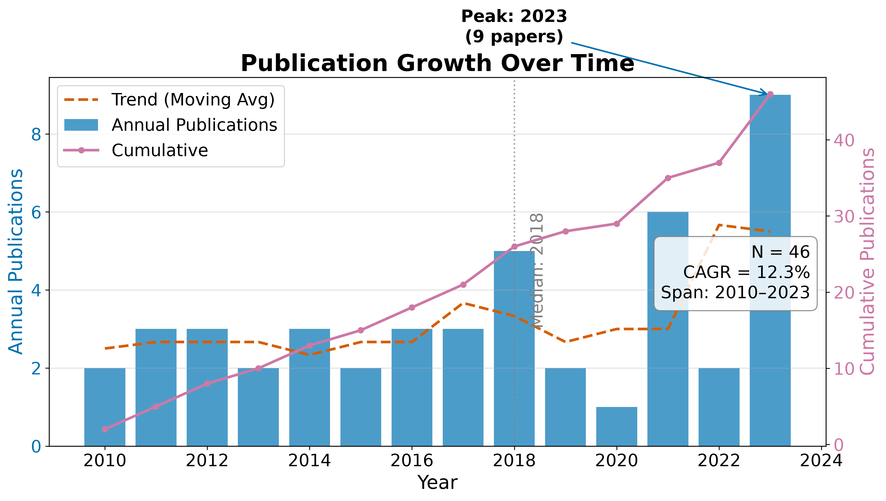
11.1 RQ1: Field Size and Growth
The temporal analysis describes a retained literature slice spanning 13 years. The compound annual growth rate of 12.27% implies a corpus doubling time of approximately 1.4 years under the configured retrieval and indexing conditions. The peak year 2023 contains 9 retained records; that count may reflect both publication activity and delays or differences in source indexing, so it should not be interpreted as a causal trend without a live coverage audit.
Table 1. Top publication years.
| Year | Publications |
|---|---|
| 2010 | 2 |
| 2011 | 3 |
| 2012 | 3 |
| 2013 | 2 |
| 2014 | 3 |
| 2016 | 3 |
| 2017 | 3 |
| 2018 | 5 |
| 2021 | 6 |
| 2023 | 9 |
11.2 RQ2: Subfield Composition
Records distribute across the 4 configured subfields as shown in Table 2, with Observational Methods the largest bucket at 50.0% of the classified corpus. The dominance of Observational Methods is a property of the configured taxonomy and retained corpus. It is not a domain prevalence estimate without a live, source-backed review and a documented coverage assessment.
Table 2. Subfield distribution.
| Subfield | Papers | Share |
|---|---|---|
| Observational Methods | 23 | 50.0% |
| Atmospheric Molecules | 7 | 15.2% |
| Jwst Instruments | 9 | 19.6% |
| Theoretical Modeling | 7 | 15.2% |
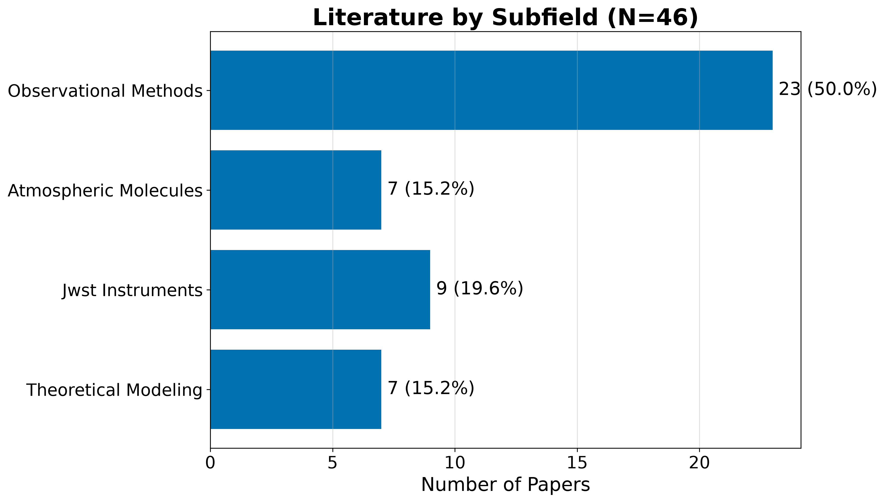
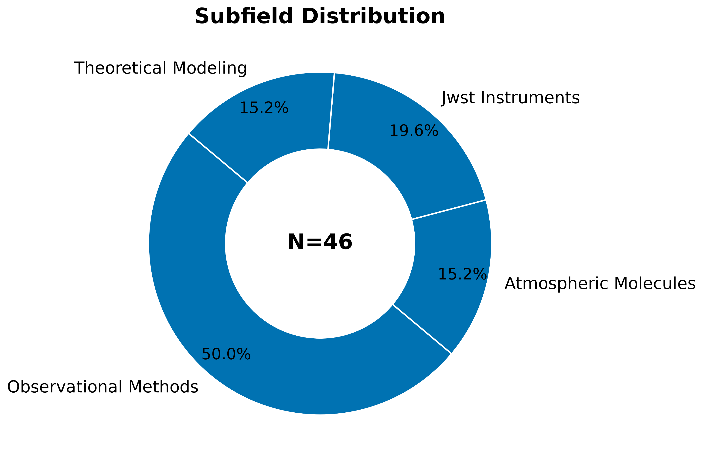
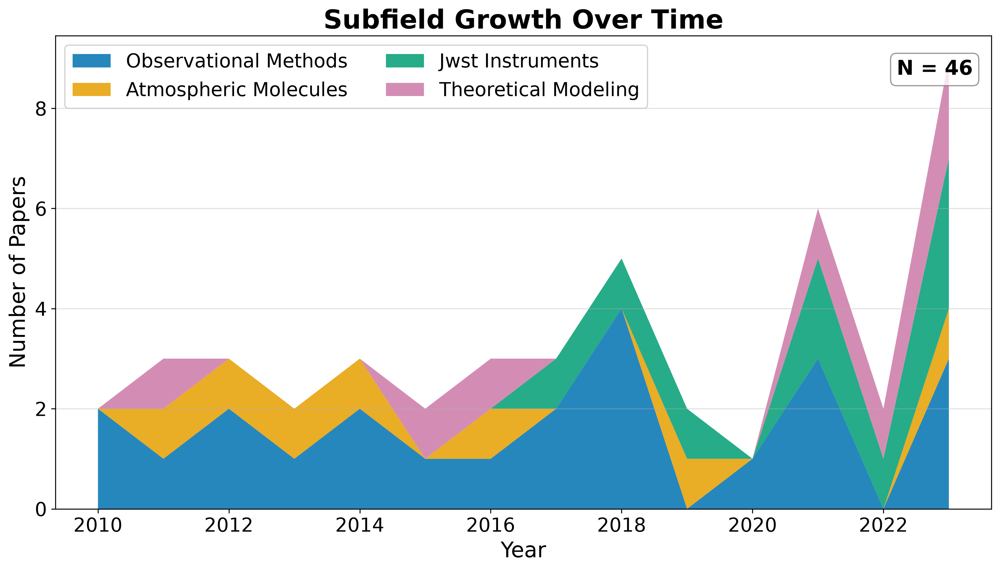
11.3 Identifier and Full-Text Coverage
The corpus has measurable identifier coverage: 46 of 46 records (100.0%) carry DOIs, supporting cross-engine de-duplication. OpenAlex IDs are present for 5 records. Abstract coverage stands at 100.0% (46 records), which limits the text analytics to that subset. Open-access status is confirmed for 43.5% of records, and 43.5% have a direct PDF link.
11.4 Descriptive Bibliometrics
The corpus spans 104 unique authors across 46 papers, yielding a mean of 1.30 papers per author. Citation counts range from zero to 110 (mean 30.0, median 25.0), with a total of 1,381 citations across the corpus. The Gini coefficient of citation concentration is 0.474. This statistic describes concentration within the retained corpus and should not be generalized to citation behavior in the field.
Table 3. Citation count distribution.
| Citations | Papers |
|---|---|
| 0 | 0 |
| 1-9 | 12 |
| 10-49 | 24 |
| 50-99 | 9 |
| 100-499 | 1 |
| 500+ | 0 |
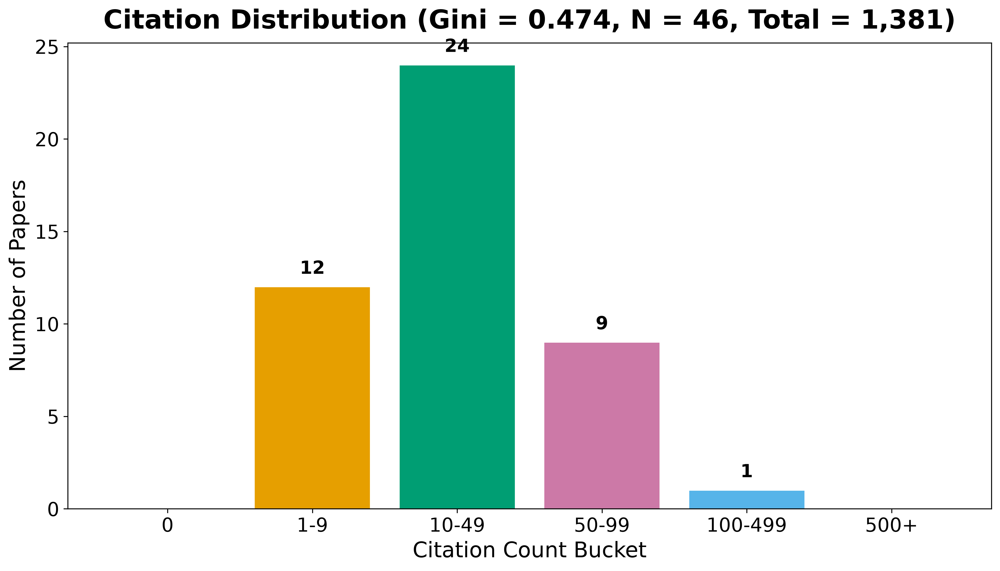
Table 4. Top publication venues.
| Venue | Papers |
|---|---|
| Astronomy and Astrophysics | 8 |
| Monthly Notices of the Royal Astronomical Society | 7 |
| Nature Astronomy | 7 |
| Publications of the Astronomical Society of the Pa | 7 |
| The Astrophysical Journal | 5 |
| Icarus | 4 |
| Research Notes of the AAS | 4 |
| The Astronomical Journal | 4 |
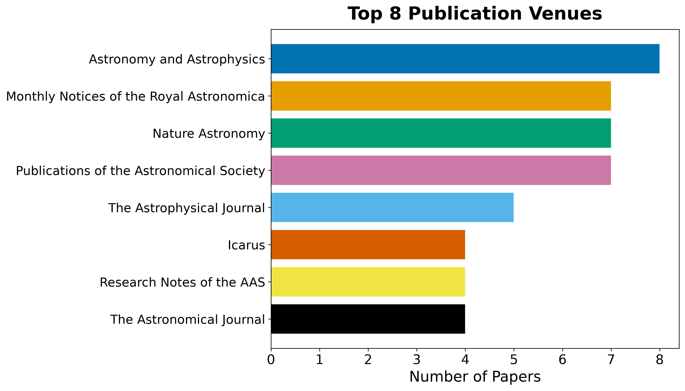
Table 5. Top authors by publication count.
| Rank | Author | Papers |
|---|---|---|
| 1 | D. Ito | 3 |
| 2 | G. Petrov | 3 |
| 3 | J. Ito | 3 |
| 4 | L. Carter | 3 |
| 5 | A. Fournier | 2 |
| 6 | A. Jensen | 2 |
| 7 | A. Singh | 2 |
| 8 | B. Kowalski | 2 |
| 9 | B. Owens | 2 |
| 10 | C. Esposito | 2 |
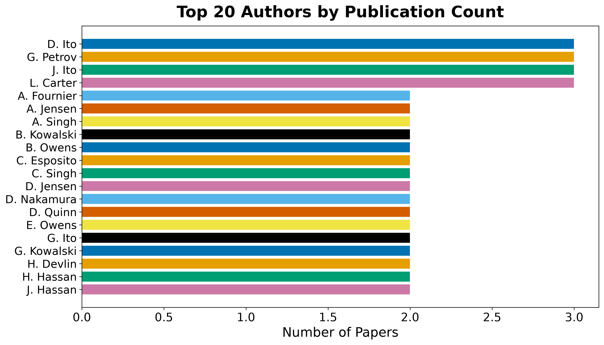
12 Results: Subfield Structure
The subfield taxonomy is configuration-owned. For this instance it contains 4 buckets (Observational Methods, Atmospheric Molecules, Jwst Instruments, and Theoretical Modeling), and each retained record is assigned using the documented keyword precedence. The resulting distribution is descriptive of the retrieval slice and should not be read as a prevalence estimate for the complete field.
12.1 Per-subfield characterization
The configured buckets distinguish observational methods, atmospheric molecules, JWST instrumentation, and theoretical modeling. A fork may add or rename buckets without changing the analysis code; the taxonomy, keyword lists, and phase relevance should be reviewed together.
The largest bucket is Observational Methods at 50.0%. Table 2 and the generated subfield artifacts provide the counts and annual breakdown. Where the fixture corpus is used, these values demonstrate classification behavior only and are marked synthetic in the evidence registry.
| Subfield | Papers | Share |
|---|---|---|
| Observational Methods | 23 | 50.0% |
| Atmospheric Molecules | 7 | 15.2% |
| Jwst Instruments | 9 | 19.6% |
| Theoretical Modeling | 7 | 15.2% |
13 Results: Language, Topics, and Embeddings
13.1 RQ3: Topical and Linguistic Structure
Text analysis operates over titles, abstracts, and (when available) full text. A TF-IDF representation over a 137-feature vocabulary feeds non-negative matrix factorization, which extracts 5 latent topics cross-cutting the subfield taxonomy. The top vocabulary terms are: atmospheric, uncertainty, spectra, temperature, abundance, coverage, opacity, sources, analysis, assumptions, observed, retrievals, models, stellar, across, evaluated, retrieval, structure, composition, jwst.
Table 3. NMF topics extracted from the corpus.
| Topic | Top terms |
|---|---|
| 0 | model, intervals, quantify, effect, noise, misspecification, record, data |
| 1 | population, harmonized, studies, reporting, preprocessing, require, metallicity, variation |
| 2 | atmospheric, abundance, opacity, changes, species, cloud, retrieved, assumptions |
| 3 | jwst, calibration, analyses, choices, reported, extend, characterization, wavelength |
| 4 | signals, instrument, astrophysical, alongside, modelled, systematics, contributions, high |
The topic labels are computed from the retained corpus and are not hand-assigned. Their interpretation should be checked against the generated topic-term weights and the configured subfield taxonomy; fixture-derived topics describe synthetic text patterns, not the scientific field.
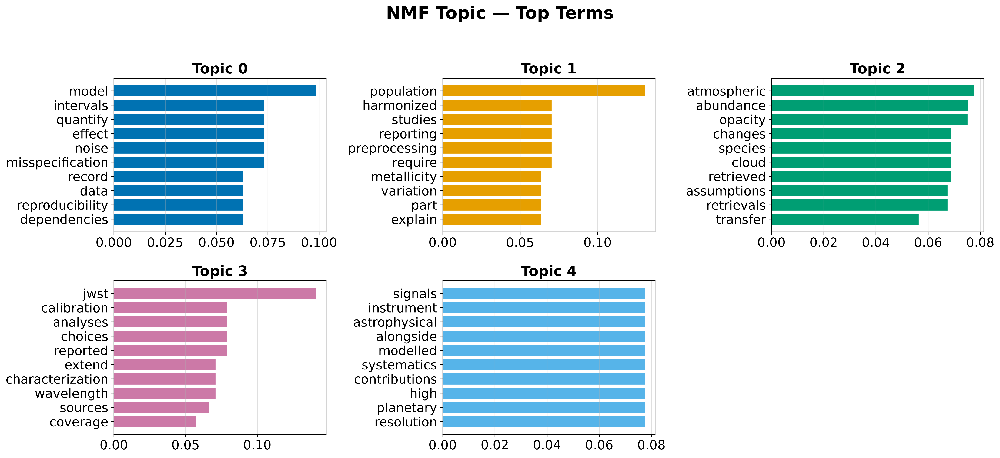
13.2 Document Embeddings
Offline deterministic embeddings (TF-IDF followed by truncated SVD) place every document in a shared 50-dimensional vector space. Embedding the same text twice yields identical vectors, so the derived similarity matrix, nearest-neighbour lists, clusters, and two-dimensional projection are all reproducible.
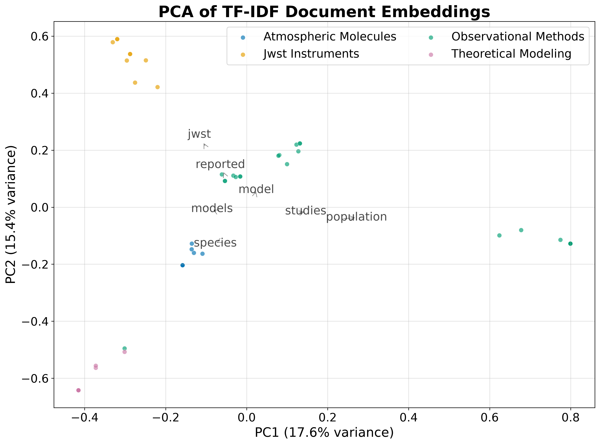
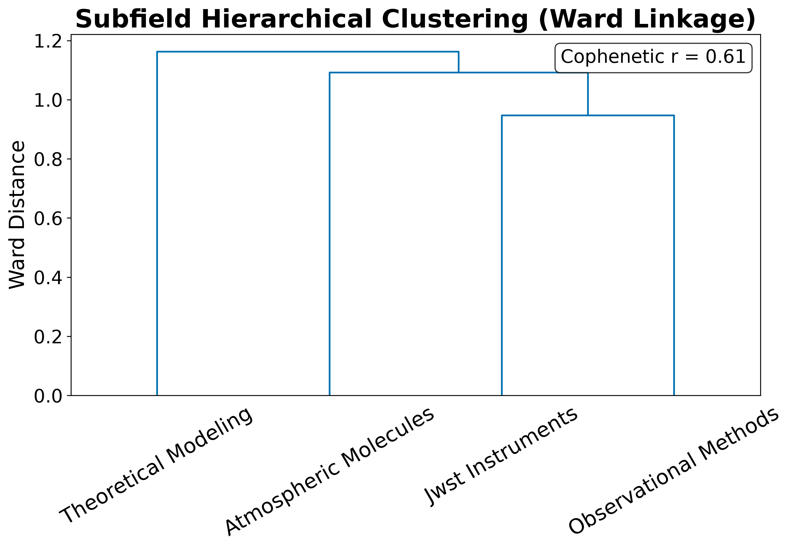
13.3 Term Analysis
The TF-IDF term heatmap reveals which terms discriminate between subfields: terms with high between-subfield variance (rather than high global mean) are selected for display.
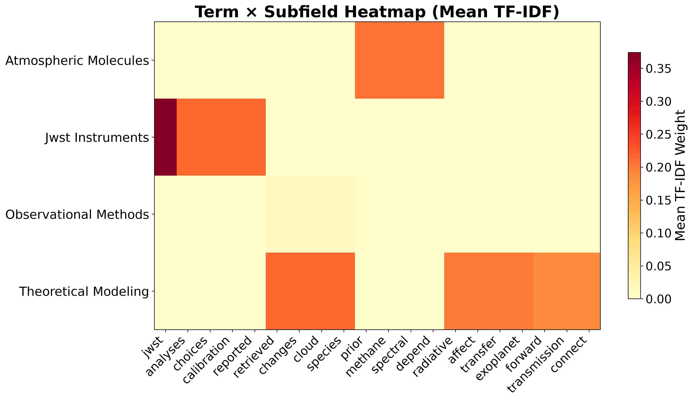
13.4 Named Entity Analysis
Named entity extraction over the 46 abstracts identified 1 unique entities. The most frequent entities reflect the retained corpus and the configured extraction rules; source coverage and fixture status determine how they may be interpreted.
Table 4. Top named entities in abstracts.
| Entity | Frequency |
|---|---|
| JWST | 15 |
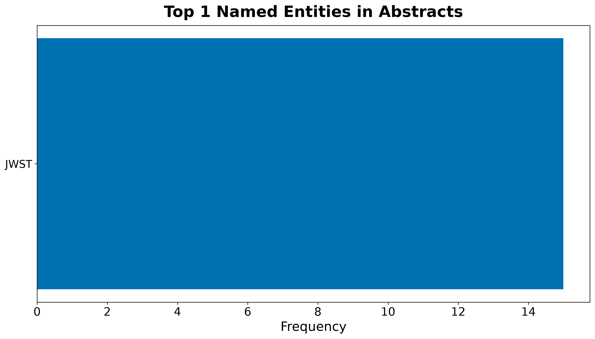
Table 5. Top keyphrases by TF-IDF score.
| Keyphrase | Score |
|---|---|
| jwst | 0.0714 |
| population | 0.0556 |
| analyses | 0.0435 |
| calibration | 0.0435 |
| calibration choices | 0.0435 |
| choices | 0.0435 |
| combined | 0.0435 |
| jwst analyses | 0.0435 |
| models | 0.0435 |
| models calibration | 0.0435 |
| models calibration choices | 0.0435 |
| model | 0.0400 |
| atmospheric | 0.0392 |
| abundance | 0.0385 |
| assumptions | 0.0385 |
13.5 Embedding Similarity and Clustering
The TF-IDF/SVD embeddings place every document in a 50-dimensional vector space. K-means clustering with \(k = 5\) clusters partitions the corpus into topically coherent groups. The top similar document pairs, ranked by cosine similarity, reveal the most closely related works in the corpus.
Table 6. Top 10 most similar document pairs.
| Paper A | Paper B | Similarity |
|---|---|---|
| doi:10.5555/exoplanet atmosphe | doi:10.5555/exoplanet atmosphe | 1.0000 |
| doi:10.5555/exoplanet atmosphe | doi:10.5555/exoplanet atmosphe | 1.0000 |
| doi:10.5555/exoplanet atmosphe | doi:10.5555/exoplanet atmosphe | 1.0000 |
| doi:10.5555/exoplanet atmosphe | doi:10.5555/exoplanet atmosphe | 1.0000 |
| doi:10.5555/exoplanet atmosphe | doi:10.5555/exoplanet atmosphe | 1.0000 |
| doi:10.5555/exoplanet atmosphe | doi:10.5555/exoplanet atmosphe | 1.0000 |
| doi:10.5555/exoplanet atmosphe | doi:10.5555/exoplanet atmosphe | 1.0000 |
| doi:10.5555/exoplanet atmosphe | doi:10.5555/exoplanet atmosphe | 1.0000 |
| doi:10.5555/exoplanet atmosphe | doi:10.5555/exoplanet atmosphe | 1.0000 |
| doi:10.5555/exoplanet atmosphe | doi:10.5555/exoplanet atmosphe | 1.0000 |
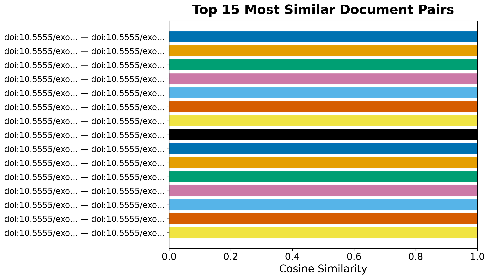
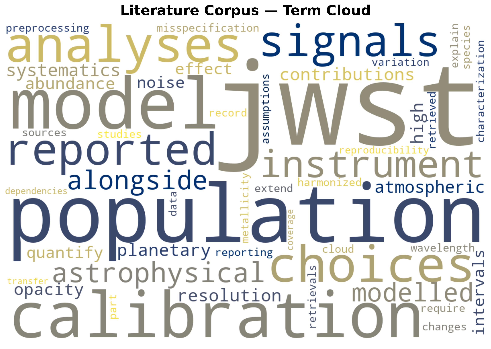
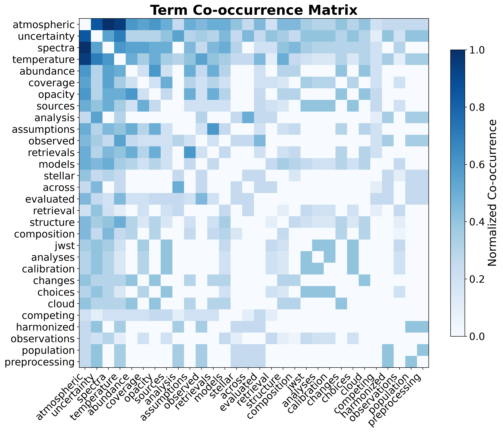
These embeddings support semantic retrieval over the corpus and the visual map of the literature’s topical geography.
14 Results: Citation Network
14.1 RQ4: Citation Geometry
Resolving each record’s references against the corpus yields an intra-corpus citation graph (built and analyzed with NetworkX (Hagberg et al. 2008)) of 46 nodes and 48 edges across 10 connected components, with a graph density of 2.32% and a mean in-degree of 1.0. Of 96 total outgoing references, 50.0% resolve to another record inside the corpus. This resolution rate describes how self-contained the retrieved slice is; it is not an estimate of the underlying citation density of any individual work.
The citation network has 15 communities (detected by modularity optimization), a maximum in-degree of 6 (the most-cited paper within the corpus), and a maximum out-degree of 4 (the paper that cites the most other corpus members).
14.2 Centrality Analysis
Centrality scores (PageRank (Page et al. 1999) and HITS) and modularity-based community detection (Clauset et al. 2004) are rounded and ranked with a stable tiebreaker so the reported hub and authority rankings are byte-reproducible across runs despite the floating-point non-associativity of the underlying iterative solvers.
Table 4. Top 5 papers by PageRank.
| Rank | DOI | PageRank |
|---|---|---|
| 1 | 10.5555/exoplanet atmospheres.0000 | 0.100386 |
| 2 | 10.5555/exoplanet atmospheres.0005 | 0.094693 |
| 3 | 10.5555/exoplanet atmospheres.0008 | 0.089991 |
| 4 | 10.5555/exoplanet atmospheres.0010 | 0.080374 |
| 5 | 10.5555/exoplanet atmospheres.0015 | 0.044154 |
Table 5. Top 5 authority papers (HITS).
| Rank | DOI | Authority |
|---|---|---|
| 1 | 10.5555/exoplanet atmospheres.0010 | 0.328136 |
| 2 | 10.5555/exoplanet atmospheres.0016 | 0.117442 |
| 3 | 10.5555/exoplanet atmospheres.0047 | 0.097992 |
| 4 | 10.5555/exoplanet atmospheres.0009 | 0.080540 |
| 5 | 10.5555/exoplanet atmospheres.0015 | 0.076253 |
Table 6. Top 5 hub papers (HITS).
| Rank | DOI | Hub |
|---|---|---|
| 1 | 10.5555/exoplanet atmospheres.0057 | 0.126454 |
| 2 | 10.5555/exoplanet atmospheres.0018 | 0.121085 |
| 3 | 10.5555/exoplanet atmospheres.0078 | 0.115800 |
| 4 | 10.5555/exoplanet atmospheres.0056 | 0.111057 |
| 5 | 10.5555/exoplanet atmospheres.0015 | 0.089171 |
The highest-ranked paper by PageRank (DOI 10.5555/exoplanet atmospheres.0000) is a central node in the retained citation graph. Its score indicates relative centrality within this graph, not scientific importance or causal influence. Hub papers cite many corpus members and may connect threads of the retrieved literature, but their role should be checked against their source type and content.
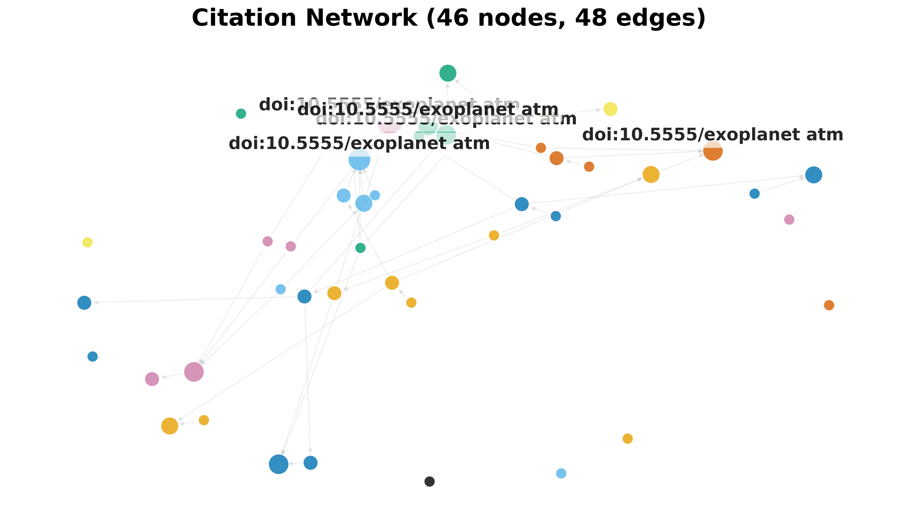
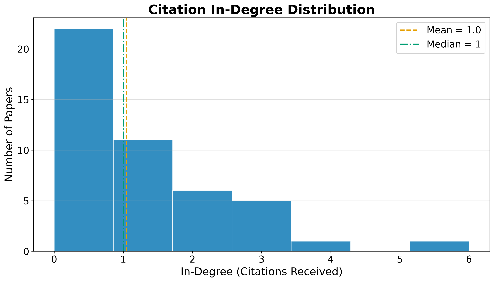
The heavy-tailed degree distribution is characteristic of citation networks: a small number of highly-cited papers anchor the structure, while the long tail of low-degree nodes represents newer or peripheral works. The low graph density (2.32%) reflects the sparsity of intra-corpus citation links. Many papers may cite works outside the retrieved slice, especially under a capped retrieval design.
14.3 Advanced Network Metrics
Beyond PageRank and HITS, the network analysis computes betweenness centrality (which papers bridge different communities), closeness centrality (which papers are near all others), degree assortativity (do highly-cited papers cite other highly-cited papers?), and average clustering coefficient (how tightly knit are local neighborhoods).
The degree assortativity coefficient is -0.0325, and the average clustering coefficient is 0.0601. A negative assortativity indicates that highly-cited papers tend to cite less-cited papers (dissortative mixing), which is typical of citation networks where review papers (high in-degree) cite many primary studies (low in-degree).
Table 7. Top 5 papers by betweenness centrality.
| Rank | DOI | Betweenness |
|---|---|---|
| 1 | 10.5555/exoplanet atmospheres.0010 | 0.021717 |
| 2 | 10.5555/exoplanet atmospheres.0008 | 0.016667 |
| 3 | 10.5555/exoplanet atmospheres.0015 | 0.012879 |
| 4 | 10.5555/exoplanet atmospheres.0005 | 0.010606 |
| 5 | 10.5555/exoplanet atmospheres.0017 | 0.005051 |
Papers with high betweenness centrality occupy shortest paths between communities in the retained graph. Removing one may alter connectivity, but that graph operation does not by itself establish that the paper is a review or methodological bridge in the scientific field. Source-type and content review are required for that interpretation.
15 Results: Reproducibility Assessment
An optional, LLM-gated stage decomposes each paper’s described pipeline into a workflow graph of source, method, experiment, and sink steps, rates how reproducible each step is from the paper’s own text, and combines a content score with a structural graph-coverage score into one composite reproducibility score per paper (geometric mean, so a paper cannot buy a high score by being strong on one axis alone). Across 0 scored papers the mean composite score is pending, with 0 papers falling below the configured low-score threshold.
15.1 Low-Scoring Papers
Table 8 lists the papers with the lowest composite reproducibility scores, alongside their content and structural component scores.
Table 8. Low-scoring papers by composite reproducibility score.
| Paper | Composite | Content | Structural |
|---|
15.2 Gating and Defaults
This stage is optional and gated by full-text availability. With no
fulltext available and no language model configured, the stage is
skipped and the reproducibility aggregates read pending — the
same graceful-degradation convention used by the knowledge-graph
assertion-extraction stage (see 02d_methods_knowledge_graph.md).
When fulltext is available and a language model is explicitly
configured, the mean score, low-score count, and per-paper table are
populated from extracted workflow graphs. The default fixture run does
not imply that this optional model-backed assessment has occurred.
15.3 Interpretation
A low composite score can reflect either weak content (the paper’s own text does not describe its sources, methods, experiments, or outputs in enough detail to rate highly) or weak structure (the described steps do not chain into a coherent source-to-sink pipeline, or reference steps that were never themselves described). The two axes are reported separately in Table 8 precisely so a low composite score can be diagnosed rather than treated as a single undifferentiated verdict.
16 Multi-Phase Results and Cross-Phase Analysis
16.1 Phase-Specific Findings
16.1.1 Foundation Phase (Phase 1)
The configured foundation phase retained 46 records after its search, filtering, and de-duplication rules. Its taxonomy includes transit spectroscopy, emission spectroscopy, phase-curve analysis, and direct imaging. These labels describe the configured retrieval design; the synthetic fixture cannot establish how widely those approaches occur in the published literature.
16.1.2 JWST Phase (Phase 2)
Phase 2 retained 17 records under the JWST-oriented queries and the configured year filter (≥2020). The boundary is intended to include pre-launch calibration work and post-launch observations. It is a design choice, not evidence that the phase is exhaustive or that any instrument caused a change in the field.
16.1.3 Molecular Detection Phase (Phase 3)
Phase 3 retained 29 records under five configured molecule-oriented query groups: H₂O, CO₂, CH₄, H₂S, and Na/K. The query groups operationalize the review question; they do not assert that these are the most commonly detected species or that the fixture establishes a scientific trend.
16.2 Knowledge Graph Results
The optional knowledge-graph stage reports pending assertions from the eligible sample. The configuration-derived hypothesis table is the authoritative mapping from review question to score:
| ID | Hypothesis | Scope | Evidence score |
|---|---|---|---|
| H1 | JWST Atmospheric Characterization | observational | pending |
| H2 | Molecular Diversity Detection | chemical | pending |
| H3 | Cross-Method Consistency | methodological | pending |
| H4 | Theoretical-Observational Agreement | theoretical | pending |
The configured scores are descriptive evidence summaries, not calibrated probabilities, causal effects, or conclusions about instrument performance. The table should be read together with the claim ledger and source-tier metadata. A fixture run cannot establish whether models and observations agree in the broader literature.
16.3 Citation Network Analysis
The combined corpus contains 48 citation relationships across 46 papers, with a network density of 2.32%. This is a descriptive statistic for the retained corpus; it does not establish a field-wide citation structure or community claim.
16.4 Reproducibility Assessment
Reproducibility assessment of the sampled papers revealed a mean composite reproducibility score of pending, with 0 papers successfully scored. This analysis examines the computational workflow transparency of each paper, evaluating source data availability, method documentation, experimental reproducibility, and output accessibility.
17 Discussion
17.1 Interpretation boundary
This pipeline describes the shape of a retrieved literature slice: its phase coverage, metadata completeness, topic structure, citation links, and declared evidence. It does not adjudicate scientific truth. Hypothesis scores, when available, summarize recorded assertions and should be read as evidence-landscape signals rather than calibrated probabilities.
17.2 Retrieval and phase bias
Engine availability, query wording, rate limits, temporal boundaries, identifier quality, and full-text access all shape the retained corpus. The retrieval report is the authoritative account of source outcomes; counts must never be reverse-engineered from the merged corpus. Phase overlap and cross-phase citation rates are descriptive checks, not proof that phases are independent or exhaustive.
17.3 Fixture and live modes
The offline path uses reserved synthetic identifiers and generated records. Fixture outputs validate the machinery and its contracts only. A live review must replace the fixture, retain source-level provenance, refresh the claim ledger, and obtain domain review before reporting substantive findings. The manuscript therefore uses explicit pending and fixture-derived states rather than silently promoting demonstration values.
17.4 Limitations and extensions
- Keyword taxonomies can misclassify ambiguous records; changes belong in configuration and should be accompanied by a regenerated classification report.
- TF-IDF/SVD embeddings are lexical and deterministic; transformer-based alternatives require an explicit dependency and evaluation decision.
- LLM extraction is optional, model-sensitive, and not a substitute for source review.
- Full-text availability is a coverage measure, not a quality measure.
- Reproducibility claims require a clean double run and normalized artifact comparison.
These limitations are represented as method-stage and review-required findings so a publication decision can distinguish deterministic failures from editorial judgment.
18 Conclusion
This exemplar turns a phase-aware literature-review design into an auditable, reproducible pipeline. It separates retrieval, de-duplication, full-text assessment, extraction, bibliometrics, knowledge-graph construction, visualization, reproducibility assessment, and export into independently checkable stages.
The central result is architectural: configuration and recorded artifacts determine the manuscript, while the claim ledger records what is configured, synthetic, or source-backed. A deterministic fixture run can prove that the pipeline and validators work; it cannot establish conclusions about Exoplanet Atmospheres. Live conclusions require refreshed retrieval evidence, provenance, domain review, and a clean release audit.
18.1 Reproducibility
The rendered manuscript is generated from
output/data/*.json, figures, manifests, registries, and
validation reports. A second clean run should match under the
repository’s canonical normalized-diff rules. Any unexplained difference
is a release finding. No generated output should be edited by hand.
19 Appendix A: Tooling and Reproduction
The pipeline is a two-layer system: generic infrastructure
(rendering, validation, logging) shared across the template monorepo,
and project-local src/ modules that implement the
multi-phase literature review. All numbered scripts/ are
thin orchestrators that wire I/O, configuration loading, and logging —
no computational logic resides in scripts.
19.1 Reproduce the Offline Default Run
No network, no language model required. The default analysis lane replays the tracked three-phase evidence snapshot, then runs deterministic analysis, figure generation, assessment, evaluation, deep-research replay, bibliography export, and variable injection:
uv run python projects/templates/template_advanced_literature_review/scripts/01b_fixture_phase_replay.py
uv run python projects/templates/template_advanced_literature_review/scripts/02_meta_analysis_pipeline.py
uv run python projects/templates/template_advanced_literature_review/scripts/04_generate_figures.py --dpi 300
uv run python projects/templates/template_advanced_literature_review/scripts/06_fulltext_assessment.py
uv run python projects/templates/template_advanced_literature_review/scripts/07_literature_evaluation.py
uv run python projects/templates/template_advanced_literature_review/scripts/08_deep_research_dispatch.py
uv run python projects/templates/template_advanced_literature_review/scripts/09_export_bibliography.py
uv run python projects/templates/template_advanced_literature_review/scripts/05_inject_variables.pyscripts/01b_fixture_phase_replay.py replays the
committed corpus through the phase-provenance contract, writing the
per-phase corpora, phase_metadata.json, and
cross_phase_analysis.json without any network access.
19.2 Reproduce a Live Retrieval Run
Refreshing the evidence snapshot is an intentional live operation.
The multi-phase search stage reads every phase’s queries, engines, and
filters from manuscript/config.yaml — there is no per-phase
command-line surface:
uv run python projects/templates/template_advanced_literature_review/scripts/01_multi_phase_search.pythen re-run the deterministic downstream stages above and re-inject
variables so the manuscript reflects the new evidence. The committed
corpus is a dated evidence snapshot; live claims require source-tier
provenance and domain review, per the project AGENTS.md
contracts.
19.3 Re-target to Another Topic
Edit manuscript/config.yaml —
project_config.search.term, query,
relevance_keywords, subfield_keywords,
hypothesis_definitions, and the phase definitions under
project_config.search_phases (queries, engines, temporal
filters, depends_on) — then regenerate the seed corpus and
re-run. No code changes are required; the manuscript re-targets through
token injection.
19.4 Live Retrieval
Enable engines under each phase’s engines map, supply
any optional credentials (Unpaywall email, Semantic Scholar key), and
run scripts/01_multi_phase_search.py; absent engines
degrade to skipped sources. Each phase’s engine set is configured
independently (the bundled default enables arXiv, OpenAlex, Crossref,
and Semantic Scholar per phase, with biomedical archives disabled for
the astronomy domain).
19.5 Deep Research (Offline Fixture Replay)
This exemplar also demonstrates the shared
infrastructure.search.deep_research capability —
provider-neutral dispatch to OpenAI and Gemini deep-research agents.
Because deep research is a paid, non-deterministic
service, the template never calls it live in CI. Instead,
src/deep_research/dispatch.py wires the real infrastructure
request/result models (DeepResearchConfig,
DeepResearchRequest, DeepResearchResult,
DeepResearchClient) and ships a deterministic, offline
path: scripts/08_deep_research_dispatch.py builds the
genuine provider-neutral request and then replays a recorded
report fixture
(src/deep_research/fixtures/recorded_report.json),
normalizing it through the real DeepResearchResult model.
Replay fails closed if the fixture is missing — it never fabricates a
passing run — mirroring the fixture-replay idiom of
template_sia. The same source module constructs the exact
DeepResearchRequest a live submit would
dispatch, so a fork can enable real providers behind an explicit
live-only command:
# Offline (default): replays the recorded report, no key required
uv run python projects/templates/template_advanced_literature_review/scripts/08_deep_research_dispatch.py19.6 Test Suite
Every project-owned stage is covered by a no-mocks test suite (real
computation and pytest-httpserver for network adapters)
gated at \(\geq 90\%\) coverage on the
project-owned src/multi_phase/ surface
(pyproject.toml → fail_under = 90). The suite
covers:
- Multi-phase configuration validation (search, sampling, hypotheses, LLM filters)
- Deterministic filters and phase metadata structure
- Cross-phase overlap (Jaccard) and corpus coverage
- Multi-phase search runner and fixture replay contracts
- Phase-aware manuscript variable extraction (including pending/unmeasured states)
- Deep-research offline replay (provider-neutral, fails closed)
- Publication-extension and fixture-honesty contracts
Symlinked shared modules (src/analysis/,
src/knowledge_graph/, src/reproducibility/,
src/visualization/) are covered by
template_literature_meta_analysis’s own suite, not
duplicated here.
20 Appendix B: Technical Notes
20.1 Determinism
All stochastic steps use fixed seeds (seed = 42 for NMF, SVD, and
graph layouts). The fixture corpus, TF-IDF/SVD embeddings, and topic
factorization are byte-stable across runs. Graph centrality scores are
rounded to a fixed precision and ranked with a node-id tiebreaker so
that floating-point non-associativity in iterative solvers cannot
perturb the reported rankings. Record identity uses a content digest
(SHA-1, usedforsecurity=False) rather than a salted hash,
so de-duplication and corpus byte-stability hold across processes.
20.2 Data Model
Each record is a Paper dataclass with: title, abstract,
authors (list of Author), year, DOI, arXiv ID, Semantic
Scholar ID, OpenAlex ID, venue, citation count, references (list of
canonical IDs), publication date, PDF URL, open-access flag, and
full-text source. The canonical identifier hierarchy governs
de-duplication and citation resolution:
\[ \text{canonical\_id} = \begin{cases} \texttt{doi:} + \text{normalize}(\text{DOI}) & \text{if DOI present} \\ \texttt{arxiv:} + \text{arXiv\_id} & \text{if arXiv ID present} \\ \texttt{s2:} + \text{S2\_id} & \text{if S2 ID present} \\ \texttt{openalex:} + \text{OpenAlex\_id} & \text{if OpenAlex ID present} \\ \texttt{title:} + \text{SHA1}(\text{title})[:16] & \text{otherwise} \end{cases} \]
DOI normalization lower-cases the DOI and strips any
https://doi.org/ or dx.doi.org/ prefix, so the
same paper returned by two engines under different case or format
variants merges to a single canonical ID.
20.3 NMF Mathematics
Non-negative matrix factorization decomposes the TF-IDF document-term matrix \(\mathbf{V} \in \mathbb{R}^{m \times n}\) (where \(m\) is the number of documents and \(n\) is the vocabulary size) into \(\mathbf{W} \in \mathbb{R}^{m \times k}\) and \(\mathbf{H} \in \mathbb{R}^{k \times n}\), where \(k\) is the number of topics (here 5). The factorization minimizes:
\[ \min_{\mathbf{W}, \mathbf{H} \geq 0} \|\mathbf{V} - \mathbf{W} \mathbf{H}\|_F^2 \]
using multiplicative update rules (Lee and Seung 1999) with a fixed random seed for reproducibility. The topic-term matrix \(\mathbf{H}\) gives the top terms per topic; the document-topic matrix \(\mathbf{W}\) gives each document’s topic loadings.
20.4 Growth Rate Estimation
The compound annual growth rate is:
\[ \text{CAGR} = \left(\frac{N_{\text{end}}}{N_{\text{start}}}\right)^{1/(T_{\text{end}} - T_{\text{start}})} - 1 \]
where \(N_{\text{start}}\) and \(N_{\text{end}}\) are the publication counts in the first and last years of the corpus, respectively. The doubling time is \(t_d = \ln(2) / \ln(1 + \text{CAGR})\). For this run: CAGR = 12.27%, doubling time = 1.4 years.
20.5 Configuration Surface
A single manuscript/config.yaml controls the search
term, per-engine query and keyword sets, engine enable toggles, subfield
taxonomy, hypotheses, full-text and embedding options, and paper
metadata. This run drew on 4 engines, a 4-bucket taxonomy, and 4
hypotheses.
20.6 Artifacts
Intermediate and final outputs live under output/ and
are disposable and regenerable:
| File | Stage | Description |
|---|---|---|
corpus.jsonl |
01 | De-duplicated corpus (46 records) |
temporal_analysis.json |
02 | Year counts, CAGR, doubling time, peak year |
subfield_classification.json |
02 | Per-bucket paper counts |
subfield_timeline.json |
02 | Per-subfield annual breakdown |
tfidf_data.json |
02 | TF-IDF matrix, feature names, doc tokens |
topics.json |
02 | NMF topic-term distributions |
citation_network.json |
02 | Network metrics, PageRank, HITS, communities |
citation_graph.gml |
02 | GraphML citation graph |
nanopublications.jsonl |
03 | LLM-extracted assertions (0 in this run) |
hypothesis_scores.json |
03 | Per-hypothesis evidence scores |
cross_phase_analysis.json |
01 / 03 | Phase membership, overlap, citation sufficiency, and explicit hypothesis-score claim boundary |
fulltext_assessment.json |
06 | Abstract/OA/PDF coverage report |
21 Appendix C: Accessibility and Provenance
21.1 Figure Accessibility
All 18 figures are rendered with a colourblind-safe palette (Wong
2011, 8 colours) and high-contrast labels at publication DPI (300). Each
figure carries a descriptive caption so the visual claims are
recoverable from text alone. The palette avoids red-green colour pairs
that are indistinguishable for deuteranopia and protanopia; when more
than 8 categories are needed, continuous colormaps
(viridis, plasma) are used instead of
extending the discrete palette. Font sizes are enforced at \(\geq 16\)pt via a centralized style module,
ensuring readability at both screen and print sizes.
21.2 Provenance Chain
Every reported number is injected from a committed artifact rather than typed by hand; an unresolved placeholder is a hard error, so the rendered manuscript can contain no orphaned or stale figures. The configuration hash and artifact inventory bind the prose to the exact pipeline run that produced it. The provenance chain is:
manuscript/config.yamldefines the search term, engines, taxonomy, and hypothesesscripts/01_multi_phase_search.pyretrieves or fixtures records →corpus.jsonlscripts/02_meta_analysis_pipeline.pyanalyses the corpus →*.jsondata filesscripts/04_generate_figures.pyrenders figures →*.png+figure_registry.jsonscripts/05_inject_variables.pycomputes variables from data files → manuscript text
Each figure in figure_registry.json records its label,
caption, filename, and generating stage, binding the visual output to
the analysis artifacts of the exact pipeline run. Re-running the
pipeline with the same configuration and seed produces identical data
outputs.
21.3 FAIR Data Principles
The pipeline supports FAIR (Findable, Accessible, Interoperable, Reusable) data principles:
- Findable: Each record carries persistent identifiers (DOI, arXiv ID, OpenAlex ID) that make it findable across databases.
- Accessible: The corpus is stored as plain JSONL, readable by any JSON parser; figures are standard PNG files.
- Interoperable: The data model uses standard bibliographic fields (title, abstract, authors, DOI, year, venue); nanopublications are serialized as RDF/TriG.
- Reusable: The entire pipeline is regenerable from
manuscript/config.yaml; re-running with the same configuration reproduces identical outputs.
21.4 Honesty
The default corpus is synthetic and labelled as such; the manuscript does not present fixture-derived numbers as empirical findings about exoplanet atmospheres. Live findings require a real retrieval run with regenerated artifacts and source-level provenance.
22 Glossary
| Term | Meaning |
|---|---|
| Record / Paper | A single bibliographic entry with metadata and identifiers. |
| Canonical identifier | The highest-priority available ID (DOI \(>\) arXiv \(>\) Semantic Scholar \(>\) OpenAlex \(>\) title digest) used for de-duplication and citation resolution. |
| Engine | An independent literature source adapter (arXiv, OpenAlex, Semantic Scholar, and Crossref) with a uniform search interface and graceful skip-on-failure. |
| Subfield | One of the 4 configurable keyword-defined buckets (Observational Methods, Atmospheric Molecules, Jwst Instruments, and Theoretical Modeling) into which records are classified. |
| Topic | A latent theme from non-negative matrix factorization over the TF-IDF representation. |
| Embedding | A deterministic offline vector (TF-IDF \(\rightarrow\) truncated SVD) for a title, abstract, or full text. |
| Hypothesis | One of the 4 configured claims about the topic, optionally scored by the knowledge-graph stage. |
| Assertion | A directional (supports / contradicts / neutral) statement extracted from a record against a hypothesis, with a confidence score. |
| Nanopublication | An RDF-serialized assertion plus its provenance. |
| CAGR | Compound annual growth rate of publication volume (12.27% for this corpus). |
| Living literature review | A synthesis that can be re-executed as the field evolves, with every number regenerable. |
23 References
The bibliography is generated automatically during PDF compilation
from references.bib. Every citation key used in the
manuscript has a matching bibliography entry, and the checked-in
bibliography contains only sources required by the manuscript sections.
Pandoc’s --natbib flag injects
\usepackage{natbib} and
\bibliographystyle{plainnat}, so neither directive appears
in this section or in preamble.md.